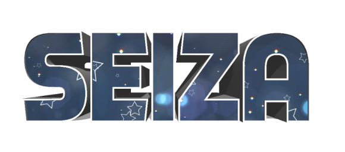
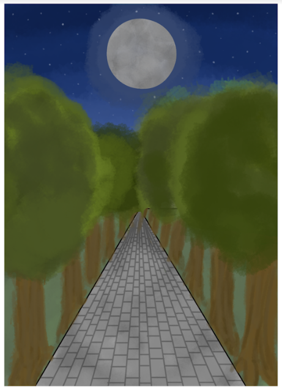
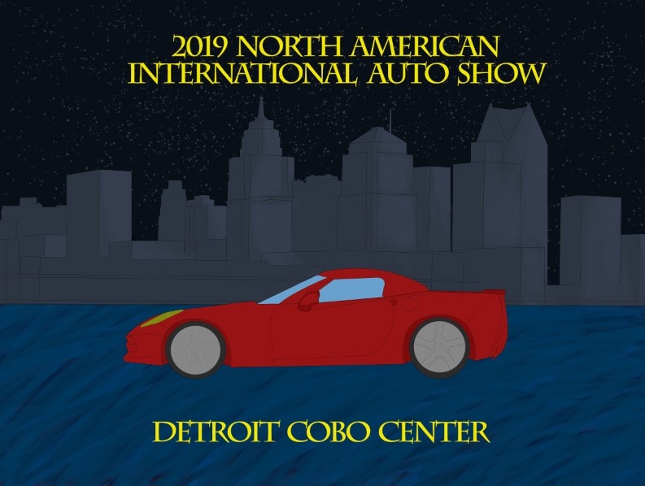

My Best Works
I created a logo for my cosplay group. I used the 3d tool in photoshop to make the text look three dimentional and placed an image of stars and space within the text. I had made text similar to this at the beginning of the year and used what I had learned from that to create this logo.
I really enjoy how this design came out, I had never drawn a pathway or trees the way I did this before. I think the trees look really good without black outlines. I had never really made a pathway that has a horizon but for my first attempt I am very proud of this.
This was created for the North American International Auto Show poster contest. I spent a long time working on this and I had never drawn a car before so I am very excited that it looked cool. I spent most of my time on the background city, basing it off of a real picture of the Cobo Center from accross the lake.
